Morse theory for group presentations
& the persistent fundamental group
XIMENA FERNANDEZ
Durham University
UK CENTRE FOR TOPOLOGICAL DATA ANALYSIS
Transpennine Topology Triangle Meeting 116
'Every mathematician has a secret weapon.
Mine is Morse theory.'
Raoul Bott.
Combinatorial Homotopy Theory
$\bullet$ J. H. C Whitehead, Simplicial Spaces, Nuclei and m-Groups. Proc. London Math. Soc., S2-45(1):243, 1939
$\bullet$ J. H. C. Whitehead. On adding relations to homotopy groups. Ann. of Math. (2), 42:409–428, 1941.
$\bullet$ J. H. C. Whitehead. On incidence matrices, nuclei and homotopy types. Ann. of Math. (2), 42:1197–1239, 1941.
$\bullet$ J. H. C. Whitehead, Combinatorial homotopy I. Bull. Amer. Math. Soc. 55, 213–245, 1949.
$\bullet$ J. H. C. Whitehead, Combinatorial homotopy II. Bull. Amer. Math. Soc. 55, 453-496, 1949.
$\bullet$ J. H. C. Whitehead, Simple Homotopy Types. Amer. Math. J., 72, 1–57, 1950.
Combinatorial Homotopy Theory
Let $K,L$ be CW-complexes.
- There is an elementary collapse $K\searrow^e L$ (or elementary expansion $L\hspace{5pt}^e\hspace{-5pt}\nearrow K$)
Combinatorial Homotopy Theory
Let $K,L$ be CW-complexes.
- There is an elementary collapse $K\searrow^e L$ (or elementary expansion $L\hspace{5pt}^e\hspace{-5pt}\nearrow K$) if
Combinatorial Homotopy Theory
Let $K,L$ be CW-complexes.
- A collapse $K\searrow L$ is an ordered pairing $\{(e_i, x_i):1\leq i \leq k\}$ of the cells in $K\smallsetminus L$ such that if $K_i = L \cup \bigcup_{j < i}e_j \cup \bigcup_{j < i}x_j$, then $K_i\searrow^e K_{i-1}$.
Simple Homotopy Theory
Let $K,L$ be CW-complexes.
- There is an $n$-deformation $K \nearrow \hspace{-2 pt}\searrow\hspace{-5pt}^{^{n}}L$ if there is a sequence of CW-complexes $K=K_0,K_1,\dots K_r=L$ such that $K_i \searrow^e K_{i+1}$ or $K_i \hspace{5pt}^e\hspace{-5pt}\nearrow K_{i+1}$ for each $0\leq i\leq r-1$, and $\dim(K_i)\leq n$ for all $1\leq i\leq r$.
- There is simple homotopy equivalence $K\nearrow\hspace{-2 pt}\searrow L$ if $K \nearrow \hspace{-2 pt}\searrow\hspace{-5pt}^{^{n}}L$ for some $n\in \mathbb{N}$.
Simple Homotopy Theory
Let $K,L$ be CW-complexes.
- $K \nearrow\hspace{-2 pt}\searrow L \Rightarrow K\simeq L.$
- The converse is not true, the obstruction is measured by the Whitehead group.
If the Whitehead group $\mathrm{Wh} (K)$ of the complex $K$ is trivial, then any complex homotopy equivalent to $K$ is also simple homotopy equivalent to $K$. - For $K$ contractible, $\mathrm{Wh}(K)=0$ and hence $K\simeq * \Leftrightarrow K \nearrow\hspace{-2 pt}\searrow *.$
- (Whitehead '50) If $K, L$ are $n$-complexes, then $K \nearrow\hspace{-2 pt}\searrow L \Rightarrow K \nearrow\hspace{-2 pt}\searrow\hspace{-7pt}^{^{n+1}}L$ if $n\neq 2$.
For $n=2$, this question is open. - (C.T.C. Wall '66) If $K, L$ are $2$-complexes, then $K \nearrow\hspace{-2 pt}\searrow L \Rightarrow K\nearrow\hspace{-2 pt}\searrow\hspace{-7pt}^{^4} L$.
Discrete Morse Theory
$\bullet$ R. Forman. Morse theory for cell complexes. Adv. Math., 134(1):90–145, 1998.
$\bullet$ X. Fernandez. Morse theory for group presentations. arXiv:1912.00115, 2021.
Discrete Morse Theory
Goal: 'Simplify' the cell decomposition of a CW-complex while preserving its homotopy type.
- $K$ a regular CW-complex.
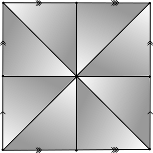
Discrete Morse Theory
Goal: 'Simplify' the cell decomposition of a CW-complex while preserving its homotopy type.
- $K$ a regular CW-complex.
- $f:K\to \mathbb{R}$ a discrete Morse function.
For every cell $e^n$ in $K$, $\#\{e^n\succ e^{n-1}: f(e^n)\leq f(e^{n-1})\}\leq 1 \text{ and } \#\{e^n\prec e^{n+1} : f(e^n)\geq f(e^{n+1})\}\leq 1.$
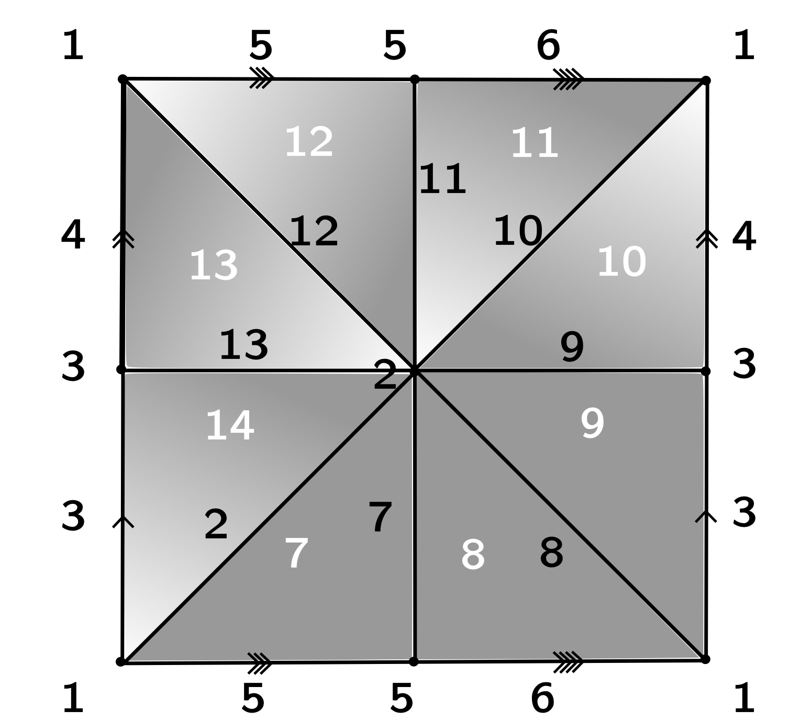
Discrete Morse Theory
Goal: 'Simplify' the cell decomposition of a CW-complex while preserving its homotopy type.
- $K$ a regular CW-complex.
- $f:K\to \mathbb{R}$ a discrete Morse function.
- $C$ the set of critical cells of $K$.
An $n$-cell $e^n \in K$ is a critical cell of index $n$ if the values of $f$ in every face and coface of $e^n$ increase with dimension.
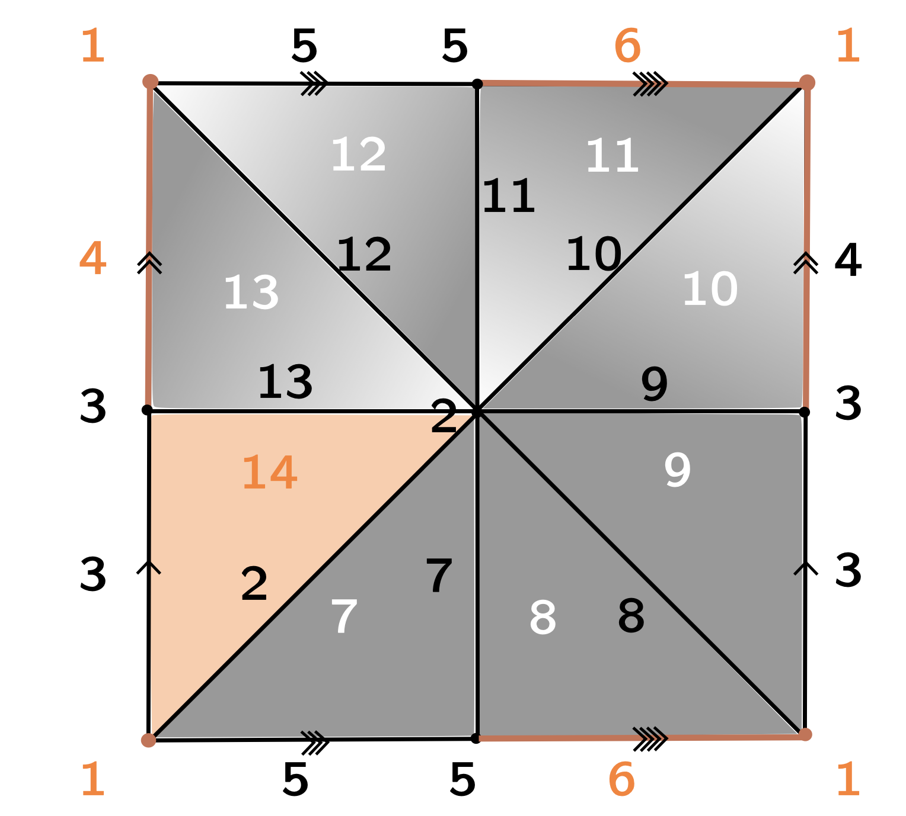
Discrete Morse Theory
Goal: 'Simplify' the cell decomposition of a CW-complex while preserving its homotopy type.
- $K$ a regular CW-complex.
- $f:K\to \mathbb{R}$ a discrete Morse function.
- $C$ the set of critical cells of $K$.
Theorem [Forman, '98]. $K$ is homotopy equivalent to a CW-complex $K_\mathcal{M}$ with exactly one cell of dimension $k$ for every critical cell of index $k$.
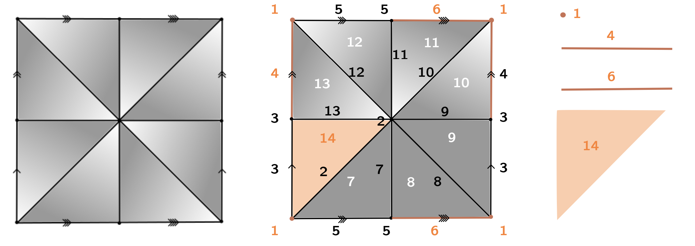 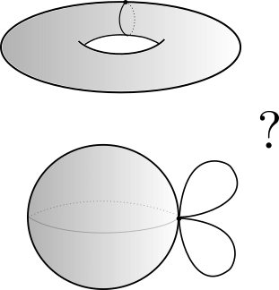Discrete Morse Theory
Goal: 'Simplify' the cell decomposition of a CW-complex while preserving its homotopy type.
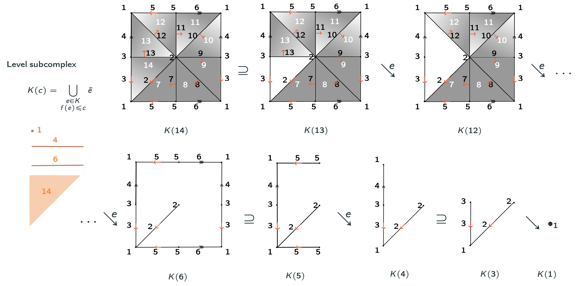Discrete Morse Theory & Whitehead deformations
Lemma (Internal collapse): Let $K$ be a CW-complex of dimension $\leq n$. Let $\varphi:\partial D^n\to K$ be the attaching map of an $n$-cell $e^n$. If $K \searrow L$, then \[K\cup e^n \nearrow\hspace{-1.5 pt} \searrow\hspace{-8pt}^{^{n+1}}L\cup \widetilde{e}^n\] where the attaching map $\widetilde{\varphi}\colon \partial D^ n\to L$ of $\widetilde{e}^n$ is defined as $\widetilde{\varphi}=r \varphi$ with $r:K\to L$ the canonical strong deformation retract induced by the collapse $K \searrow L$.

Discrete Morse Theory & Whitehead deformations
Lemma (Internal collapse): Let $K$ be a CW-complex of dimension $\leq n$. Let $\varphi:\partial D^n\to K$ be the attaching map of an $n$-cell $e^n$. If $K \searrow L$, then \[K\cup e^n \nearrow\hspace{-1.5 pt} \searrow\hspace{-8pt}^{^{n+1}}L\cup \widetilde{e}^n\] where the attaching map $\widetilde{\varphi}\colon \partial D^ n\to L$ of $\widetilde{e}^n$ is defined as $\widetilde{\varphi}=r \varphi$ with $r:K\to L$ the canonical strong deformation retract induced by the collapse $K \searrow L$.
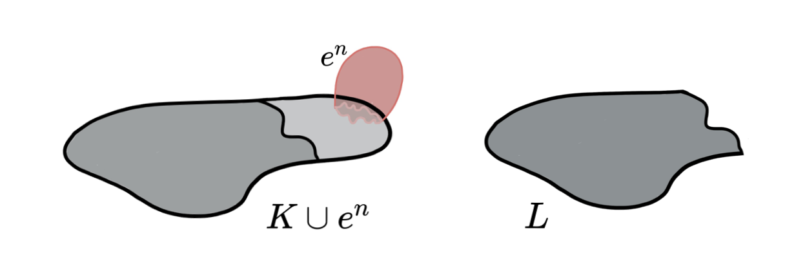Discrete Morse Theory & Whitehead deformations
Lemma (Internal collapse): Let $K$ be a CW-complex of dimension $\leq n$. Let $\varphi:\partial D^n\to K$ be the attaching map of an $n$-cell $e^n$. If $K \searrow L$, then \[K\cup e^n \nearrow\hspace{-1.5 pt} \searrow\hspace{-8pt}^{^{n+1}}L\cup \widetilde{e}^n\] where the attaching map $\widetilde{\varphi}\colon \partial D^ n\to L$ of $\widetilde{e}^n$ is defined as $\widetilde{\varphi}=r \varphi$ with $r:K\to L$ the canonical strong deformation retract induced by the collapse $K \searrow L$.
Discrete Morse Theory & Whitehead deformations
Lemma (Internal collapse): Let $K$ be a CW-complex of dimension $\leq n$. Let $\varphi:\partial D^n\to K$ be the attaching map of an $n$-cell $e^n$. If $K \searrow L$, then \[K\cup e^n \nearrow\hspace{-1.5 pt} \searrow\hspace{-8pt}^{^{n+1}}L\cup \widetilde{e}^n\] where the attaching map $\widetilde{\varphi}\colon \partial D^ n\to L$ of $\widetilde{e}^n$ is defined as $\widetilde{\varphi}=r \varphi$ with $r:K\to L$ the canonical strong deformation retract induced by the collapse $K \searrow L$.
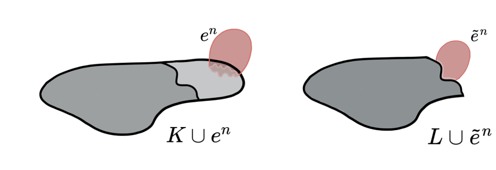Discrete Morse Theory & Whitehead deformations
Lemma (Internal collapse): Let $K$ be a CW-complex of dimension $\leq n$. Let $\varphi:\partial D^n\to K$ be the attaching map of an $n$-cell $e^n$. If $K \searrow L$, then \[K\cup e^n \nearrow\hspace{-1.5 pt} \searrow\hspace{-8pt}^{^{n+1}}L\cup \widetilde{e}^n\] where the attaching map $\widetilde{\varphi}\colon \partial D^ n\to L$ of $\widetilde{e}^n$ is defined as $\widetilde{\varphi}=r \varphi$ with $r:K\to L$ the canonical strong deformation retract induced by the collapse $K \searrow L$.
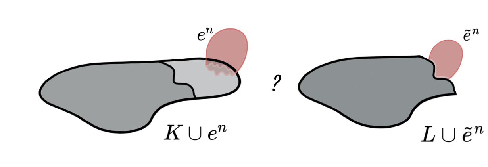Discrete Morse Theory & Whitehead deformations
Lemma (Internal collapse): Let $K$ be a CW-complex of dimension $\leq n$. Let $\varphi:\partial D^n\to K$ be the attaching map of an $n$-cell $e^n$. If $K \searrow L$, then \[K\cup e^n \nearrow\hspace{-1.5 pt} \searrow\hspace{-8pt}^{^{n+1}}L\cup \widetilde{e}^n\] where the attaching map $\widetilde{\varphi}\colon \partial D^ n\to L$ of $\widetilde{e}^n$ is defined as $\widetilde{\varphi}=r \varphi$ with $r:K\to L$ the canonical strong deformation retract induced by the collapse $K \searrow L$.
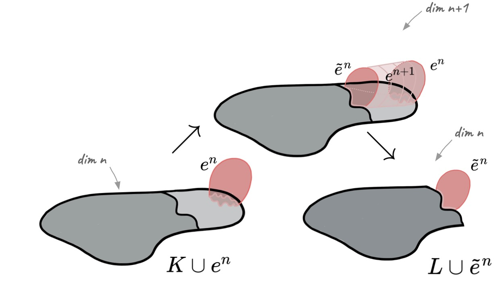Discrete Morse Theory & Whitehead deformations
Proposition: Let $ \displaystyle K \cup \bigcup_{i=1}^d e_i$ be a CW-complex where
$\dim (K) \leq \dim (e_{i})\leq \dim (e_{i+1})\leq n$ for all $i=1, 2, \dots, d$.
Let $\displaystyle \varphi_j:\partial D_j\to K\cup \bigcup_{i < j} e_i$ be the attaching map of $e_j$.
If $K\searrow L$, then there exist CW-complexes $Z_1\leq Z_2\leq \dots \leq Z_d$ of dim $\leq n+1$ such that for every $j=1, 2, \dots, d,$
\[K\cup \bigcup_{i=1}^j e_i \nearrow Z_j \searrow L\cup
\bigcup_{i=1}^j \widetilde e_i\] where the attaching map
$\displaystyle \widetilde \varphi_j:\partial D_j\to L\cup \bigcup_{i< j}
\widetilde e_i$ of the cell $\widetilde e_j$ is defined inductively as:
$\bullet ~~\displaystyle \widetilde \varphi_1=r_0\varphi_1$ with $r_0:K\to L$ the canonical strong deformation retract and for $j>1$,
$\bullet ~~\widetilde \varphi_{j}=\widetilde r_{j-1}\imath_{j-1}\varphi_{j}$ where $ \widetilde r_{j-1}:Z_{j-1}\to L\cup \bigcup_{i< j} \widetilde e_i$ is the strong deformation retract and $\imath_{j-1}: K\cup \bigcup_{i< j} e_i \to Z_{j-1}$ is the inclusion.
Discrete Morse Theory & Whitehead deformations
Theorem [F. 2021]: Let $K$ be a regular CW-complex of dim $n$ and let $f:K\to \mathbb{R}$ be discrete Morse function. Then, $f$ induces a sequence of internal collapses given by a filtration of $K$ \[ \varnothing = K_{-1} \subseteq L_0 \subseteq K_0\subseteq L_1\subseteq K_1 \dots \subseteq L_{N}\subseteq K_{N}=K\] such that $K_j\searrow L_{j}$ for all $1\leq j\leq N$ and $\displaystyle L_{j}=K_{j-1}\cup \bigcup_{i=1}^{d_j} e_i^j$ with $\{e_i^j:0\leq j\leq N, 1\leq i \leq d_j\}$ the set of critical cells of $f$. Moreover, \[ K \nearrow\hspace{-1.5 pt} \searrow\hspace{-8pt}^{^{n+1}} L_0\cup \bigcup_{j=1}^{N} \bigcup_{i=1}^{d_j}\widetilde e_i^j = K_\mathcal{M}.\]
* Here, the attaching maps of the cells $\widetilde e_i^j$ can be explicitly reconstructed from the internal collapses.
Discrete Morse Theory & Whitehead deformations
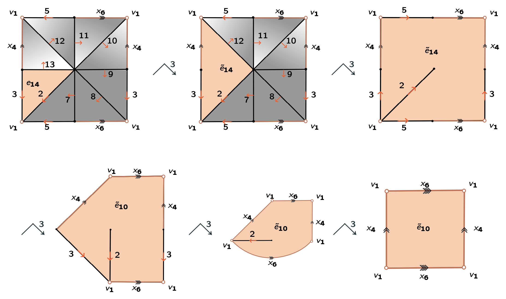Morse theory for group presentations
$\bullet$ X. Fernandez, Morse theory for group presentations (2021) arXiv:1912.00115
CW-complexes of dim 2
Group presentations
CW-complexes of dim 2
$K_{\mathcal{P}}$
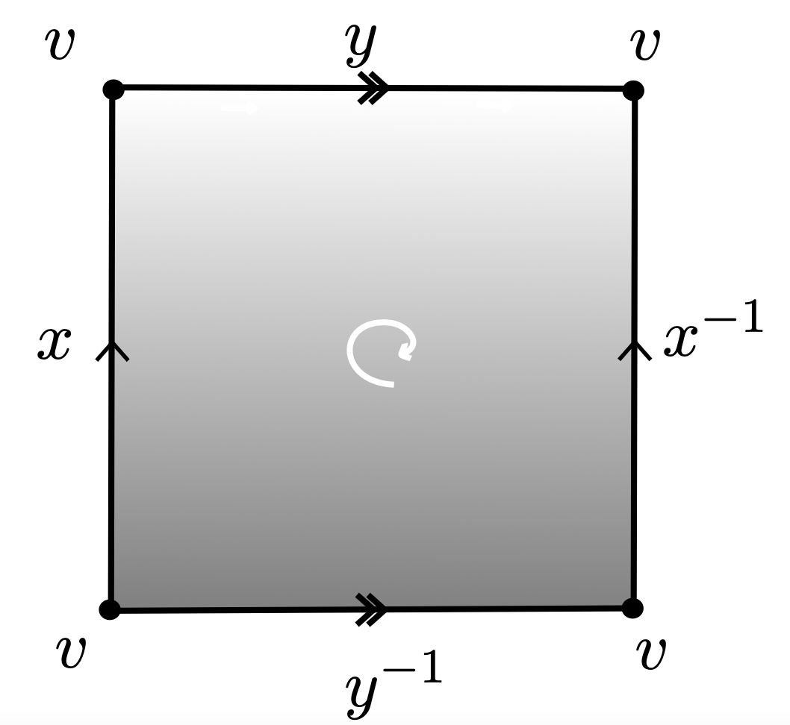Group presentations
$\mathcal{P}= \langle x,y ~|~xyx^{-1}y^{-1}\rangle $
CW-complexes of dim 2
$K$
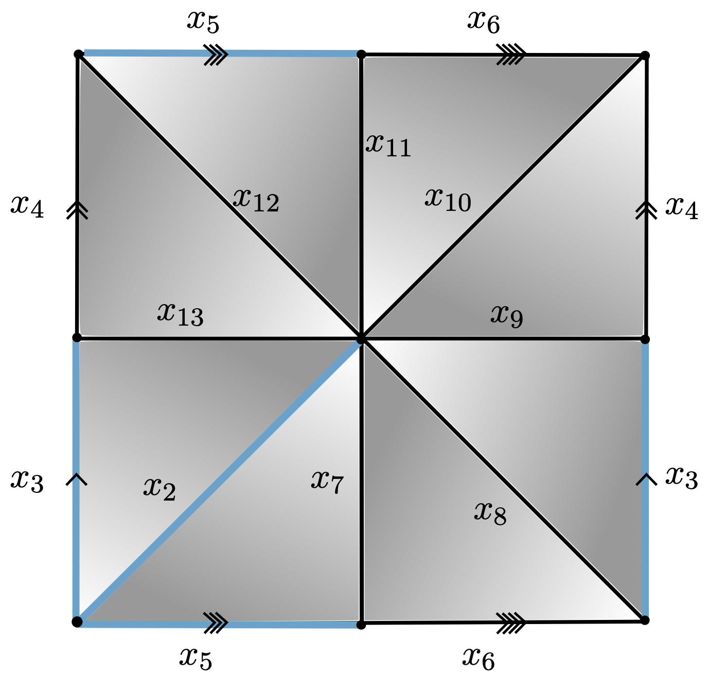Group presentations
$\mathcal{P}_K = \langle x_4, x_6, x_7, x_8, x_9, x_{10}, x_{11}, x_{12}, x_{13}~ | \\~ ~ ~ ~ ~ ~ ~ ~ ~ ~x_{13}, x_{13}^{-1}x_{12}x_4^{-1},x_{12}^{-1}x_{11}, x_{11}^{-1}x_{10}x_6^{-1}, \\ ~ ~ ~ ~ ~ ~ ~ ~ ~ ~x_{10}^{-1}x_9x_4, x_9^{-1}x_8, x_8^{-1}x_7x_6, x_7^{-1}\rangle $
Morse theory for group presentations
$K$
$\mathcal{P}_K = \langle x_4, x_6, x_7, x_8, x_9, x_{10}, x_{11}, x_{12}, x_{13}~ | \\~ ~ ~ ~ ~ ~ ~ ~ ~ ~x_{13}, x_{13}^{-1}x_{12}x_4^{-1},x_{12}^{-1}x_{11}, x_{11}^{-1}x_{10}x_6^{-1}, \\ ~ ~ ~ ~ ~ ~ ~ ~ ~ ~x_{10}^{-1}x_9x_4, x_9^{-1}x_8, x_8^{-1}x_7x_6, x_7^{-1}\rangle $
$K + f\colon K\to \mathbb{R}$ Morse function
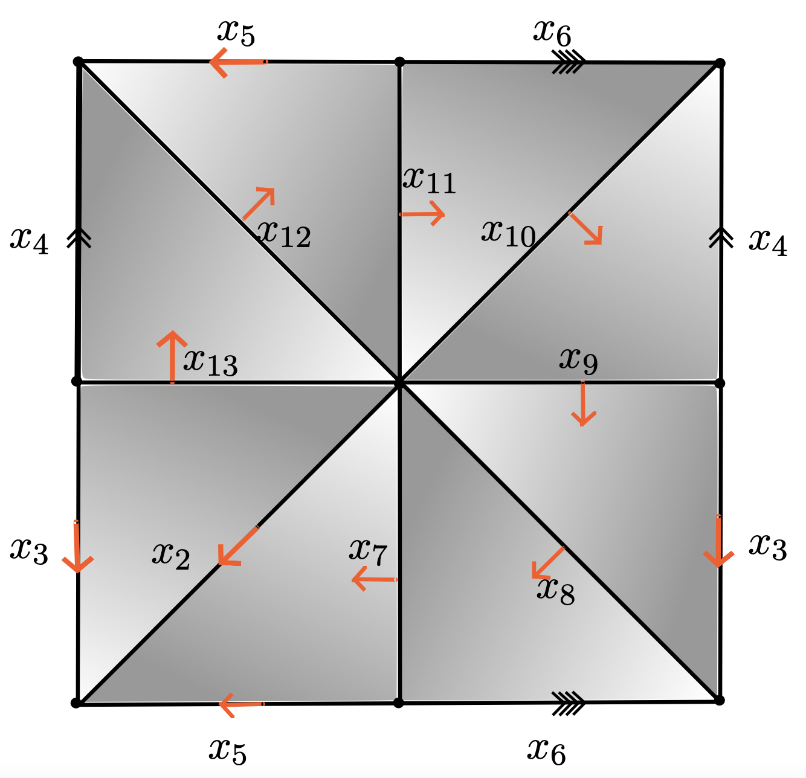$\mathcal{P}_{K_{\mathcal{M}}} = \langle x_4, x_6~ | ~ x_6x_4x_6^{-1}x_4^{-1}\rangle $
Morse theory for group presentations
Given $K$ a regular CW-complex of dim 2 and $f\colon K\to \mathbb{R}$ a discrete Morse function with a single critical 0-cell, we developed an algorithmic description of the Morse presentation $\mathcal{P}_{K_{\mathcal M}}$.
$O(M^2)$ with $M$ = |2-cells of $K$|
ximenafernandez/Finite-Topological-Spaces (SAGE)
Morse theory for group presentations
Given $K$ a regular CW-complex and $f\colon K\to \mathbb{R}$ a discrete Morse function with a single critical 0-cell, we developed an algorithmic description of the Morse presentation $\mathcal{P}_{K_{\mathcal M}}$.
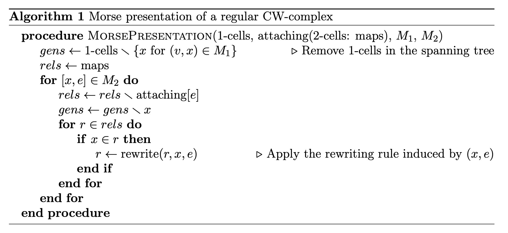The Andrews-Curtis conjecture
$\bullet$ J. J. Andrews and M. L. Curtis. Free groups and handlebodies. Proc. Amer. Math. Soc., 16:192–195, 1965.
$\bullet$ X. Fernandez. Morse theory for group presentations. arXiv:1912.00115, 2021.
The Andrews-Curtis conjecture
Conjecture [Andrews & Curtis, 1965]. Any finite balanced presentation $\mathcal{P}=\langle x_1,\dots,x_n ~|~ r_1,\dots,r_n\rangle $ of the trivial group can be transformed into the empty presentation $\langle ~|~\rangle$ by a finite sequence of the following operations:
- replace some relator $r_i$ by $r_i^{-1}$
- replace some relator $r_i$ by $r_i r_j$ for some $j \neq i$
- replace some relator $r_i$ by a conjugate $wr_i w^{-1}$ for some $w$ in the free group $F(x_1, x_2, \dots, x_n)$
- add a generator $x_{n+1}$ and a relator $r_{n+1}$ that coincides with $x_{n+1}$, or the inverse of this operation
Tietze transformations
Theorem [Tietze, 1908]. Any finite presentation $\mathcal{P}=\langle x_1,\dots,x_n ~|~ r_1,\dots,r_m\rangle $ of a group $G$ can be transformed into any other presentation of the same group by a finite sequence of the following operations:
- replace some relator $r_i$ by $r_i^{-1}$
- replace some relator $r_i$ by $r_i r_j$ for some $j \neq i$
- replace some relator $r_i$ by a conjugate $wr_i w^{-1}$ for some $w$ in the free group $F(x_1, x_2, \dots, x_n)$
- add a generator $x_{n+1}$ and a relator $r_{m+1}$ that coincides with $x_{n+1}$, or the inverse of this operation
- add a relator $1$, or the inverse of this operation
The Andrews-Curtis conjecture
Potential counterexamples.
- $\mathcal{P}=\langle x, y~|~ xyx = yxy,~ x^n = y^{n+1}\rangle,~n\geq 2$ ~[Akbulut & Kirby, 1985]
- $\mathcal{P} = \langle x,y~|~x^{-1}y^n x = y^{n+1}, ~x = y^{-1}xyx^{-1}\rangle,~n\geq 2$ ~ [Miller & Schupp, 1999]
- $\mathcal{P}=\langle x,y~| ~x=[x^m,y^n], y=[y^p,x^q]\rangle ,~n,m,p,q\in \mathbb{Z}$ ~[Gordon, 1984]
Theorem [Bridson, 2015] There exist balanced presentations on the trivial group that satifies the AC-conjecture for which the the minimun length of a simplification sequence is superexponential in the length of the relators.
The Andrews-Curtis conjecture
Remark [Referee]. AC-transformations of group presentations are in correspondence with 3-deformations of 2-complexes.
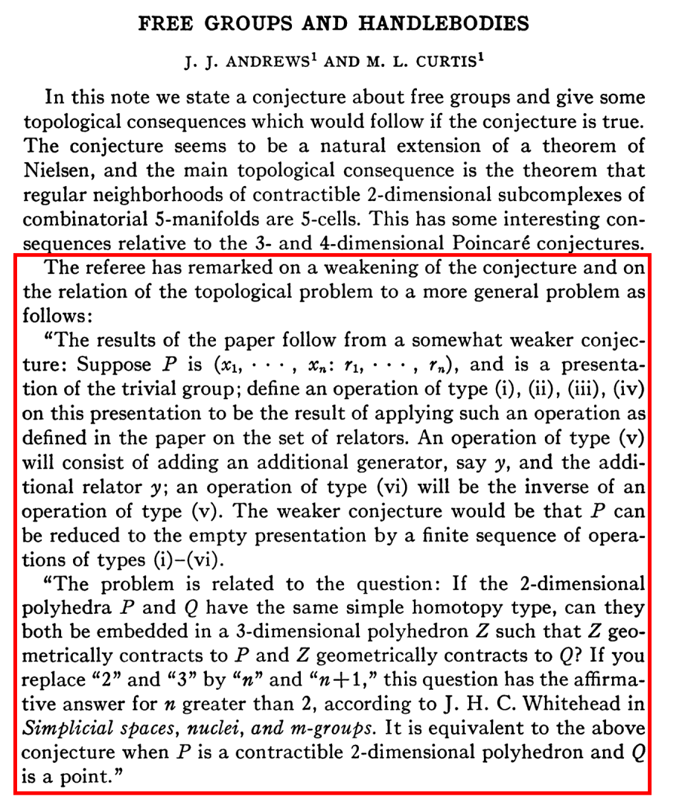The Andrews-Curtis conjecture
Corollary [F. 2021]. Let $\mathcal{P}$ be a finite presentation of a finitely presented group. Let $K'_{\mathcal{P}}$ be the barycentric subdivision of the standard complex $K_{\mathcal{P}}$ and let $f:K'_{\mathcal{P}}\to \mathbb{R}$ be a discrete Morse function.
Then $\mathcal{P}\sim_{AC}\mathcal{P}_{(K'_{\mathcal{P}})_{\mathcal M}}$.
The Andrews-Curtis conjecture
Theorem [F. 2021]. The following balanced presentations of the trivial group satisfies the Andrews-Curtis conjecture:
$\bullet ~~\mathcal{P}=\langle x, y~|~ xyx = yxy,~ x^2 = y^{3}\rangle$* [Akbulut & Kirby, 1985]
$\bullet ~~\mathcal{P}= \langle x,y~|~x^{-1}y^3 x = y^{4}, ~x = y^{-1}xyx^{-1}\rangle$ [Miller & Schupp, 1999]
$\bullet ~~\mathcal{P}=\langle x,y~| ~x=[x^{-1},y^{-1}], y=[y^{-1},x^q]\rangle, \forall q \in \mathbb{N}$ [Gordon, 1984]
* First proved by Miasnikov in 2003 using genetic algorithms.
The Persistent fundamental group
$\bullet$ Joint work (in progress) with Kevin Piterman (2022).
Topological inference
Let $X_n$ be a (possible noisy) finite sample of an unknown topological space $\mathcal X$.
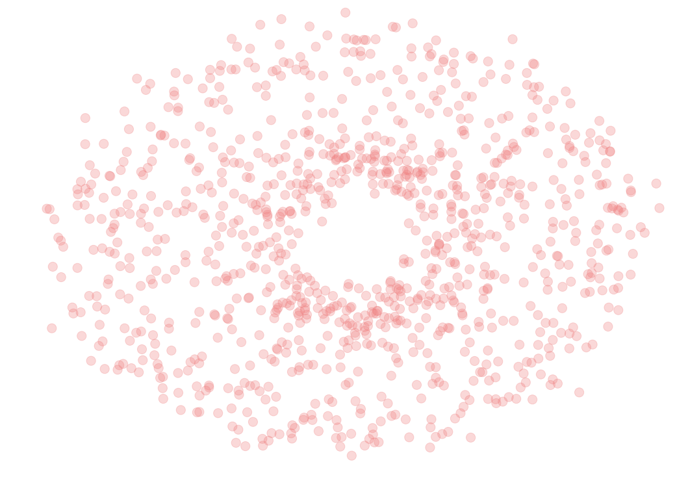Topological inference
Let $X_n$ be a (possible noisy) finite sample of an unknown topological space $\mathcal X$.
Goal: Describe an algorithmic tool to infer the fundamental group of $\mathcal{X}$ from $X_n$.
Persistence
- Metric space $(X_n,d)$
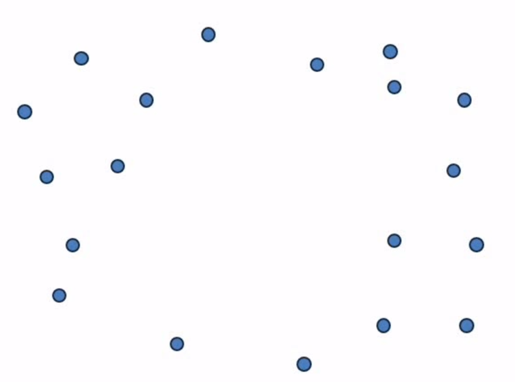
Persistence
- Metric space $(X_n,d)$
- Filtration (connected)\[K_1 \xrightarrow{i_1} K_2 \xrightarrow{i_2} \dots \xrightarrow{i_{N-1}} K_N\] 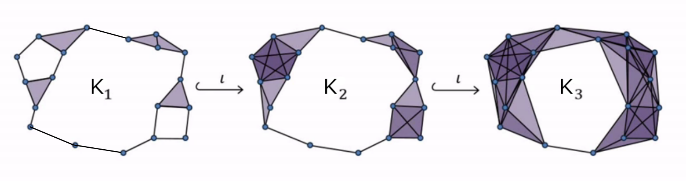
Persistence
- Metric space $(X_n,d)$
- Filtration (connected)\[K_1 \xrightarrow{i_1} K_2 \xrightarrow{i_2} \dots \xrightarrow{i_{N-1}} K_N\]
- Persistent invariant $F$ \[F(K_1) \xrightarrow{(i_1)_*} F(K_2) \xrightarrow{(i_2)_*} \dots \xrightarrow{(i_{N-1})_*} F(K_N)\]
Persistence
- Metric space $(X_n,d)$
- Filtration (connected)\[K_1 \xrightarrow{i_1} K_2 \xrightarrow{i_2} \dots \xrightarrow{i_{N-1}} K_N\]
- Persistent homology \[H_i(K_1) \xrightarrow{(i_1)_*} H_i(K_2) \xrightarrow{(i_2)_*} \dots \xrightarrow{(i_{N-1})_*} H_i(K_N)\]
Example
$S^2\vee S^1\vee S^1$ vs $S^1\times S^1$
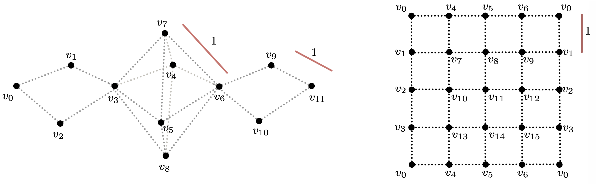Example
$S^1\times S^1$ vs $S^2\vee S^1\vee S^1$
Vietoris–Rips filtration $\mathrm{VR}_{\alpha}(X_n)$
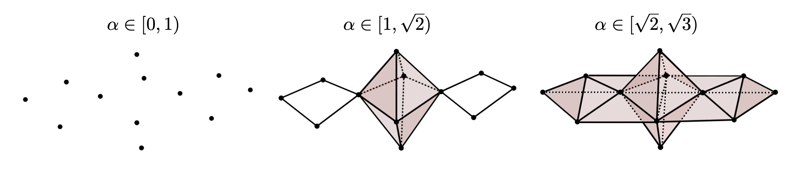 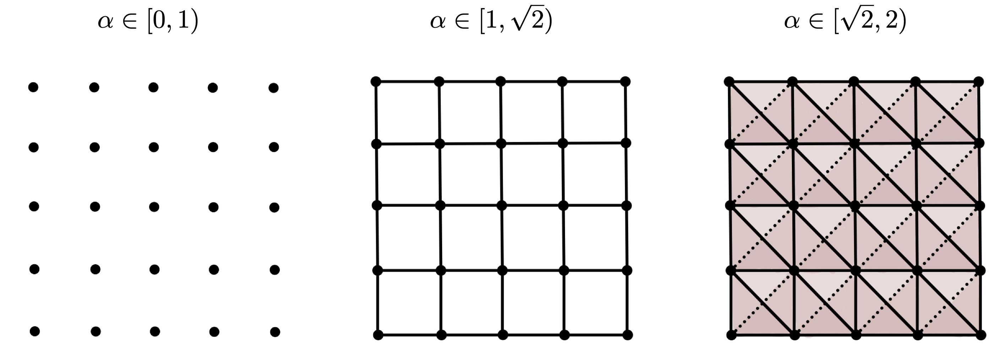Example
$S^2\vee S^1\vee S^1$ vs $S^1\times S^1$
Vietoris–Rips filtration $\mathrm{VR}_{\alpha}(X_n)$
Persistent homology $\mathrm{P H}_{*}(X_n)$
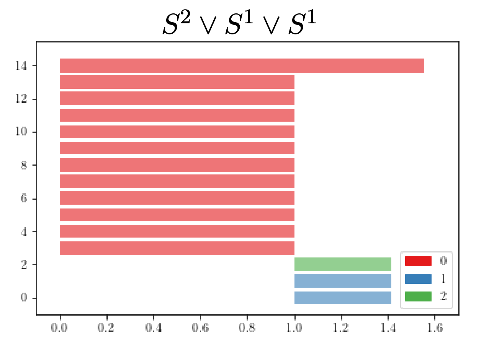 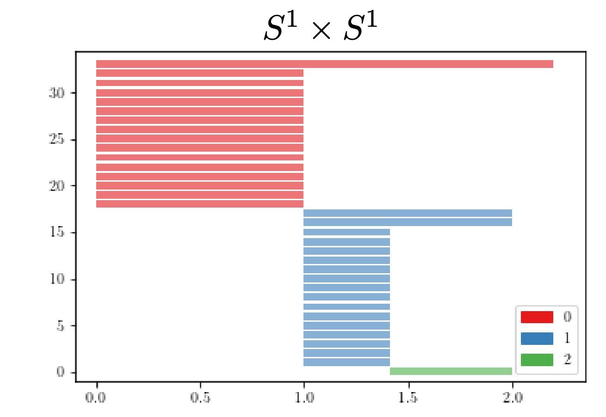Persistence
- Metric space $(X_n,d)$
- Filtration (connected)\[K_1 \xrightarrow{i_1} K_2 \xrightarrow{i_2} \dots \xrightarrow{i_{N-1}} K_N\]
- Persistent fundamental group \[\pi_1(K_1) \xrightarrow{(i_1)_*} \pi_1(K_2) \xrightarrow{(i_2)_*} \dots \xrightarrow{(i_{N-1})_*} \pi_1(K_N)\]
Persistence
- Metric space $(X_n,d)$
- Filtration (connected)\[K_1 \xrightarrow{i_1} K_2 \xrightarrow{i_2} \dots \xrightarrow{i_{N-1}} K_N\]
- Persistent fundamental group \[\pi_1(K_1) \xrightarrow{(i_1)_*} \pi_1(K_2) \xrightarrow{(i_2)_*} \dots \xrightarrow{(i_{N-1})_*} \pi_1(K_N)\]
Morse reduction. Given $f\colon K_N\to \mathbb{R}$ Morse function, \[(K_1)_\mathcal{M} \xrightarrow{?} (K_2)_\mathcal{M} \xrightarrow{?} \dots \xrightarrow{?} (K_N)_\mathcal{M}\]
\[\pi_1((K_1)_\mathcal{M})\xrightarrow{?} \pi_1((K_2)_\mathcal{M}) \xrightarrow{?} \dots \xrightarrow{?}\pi_1((K_N)_\mathcal{M})\]
Persistence
- Metric space $(X_n,d)$
- Filtration (connected) \[K_1 \xrightarrow{i_1} K_2 \xrightarrow{i_2} \dots \xrightarrow{i_{N-1}} K_N\]
- $f\colon K_N\to \mathbb{R}$ Morse function
- Persistent fundamental group
There exist $\varphi_i: \pi_1((K_i)_\mathcal{M})\to\pi_1((K_{i+1})_\mathcal{M})$ such that \[\pi_1(K_1) \xrightarrow{(i_1)_*} \pi_1(K_2) \xrightarrow{(i_2)_*} \dots \xrightarrow{(i_{N-1})_*} \pi_1(K_N)\] \[\cong ~~~~~~\circlearrowleft~~~~~~\cong ~~~~~~\circlearrowleft~~~~~~~~~~\circlearrowleft~~~~~\cong \] \[\pi_1((K_1)_\mathcal{M})\xrightarrow{\varphi_1} \pi_1((K_2)_\mathcal{M}) \xrightarrow{\varphi_2} \dots \xrightarrow{\varphi_{N-1}}\pi_1((K_N)_\mathcal{M})\]
Persistent fundamental group
Example
$S^2\vee S^1\vee S^1$ vs $S^1\times S^1$
Example
$S^2\vee S^1\vee S^1$ vs $S^1\times S^1$
Vietoris–Rips filtration $\mathrm{VR}_{\alpha}(X_n)$
For $\alpha \in [1, \sqrt{2})$ and $\alpha' \in [\sqrt{2}, 2)$, \[\varphi_{\alpha, \alpha'}(x_i) = \begin{cases} x_{16} & \text{if }i = 13,14,15,16\\ x_{17} & \text{if }i = 4,8,12,17\\ 1 & \text{otherwise}.\end{cases} \]
Example
$S^2\vee S^1\vee S^1$ vs $S^1\times S^1$
Persistent fundamental group $\mathrm{P}\Pi_1(X_n)$
Persistent homology $\mathrm{P H}_{*}(X_n)$
Future work
- Canonical (efficient) Morse functions for Vietoris-Rips filtrations of point clouds.
- Stability to small perturbations.
- Barcode decompositions (interaction with Persistent Homology).
- Persistence of group properties.
- Implementation in GAP.
- Applications in real data.
Thanks!
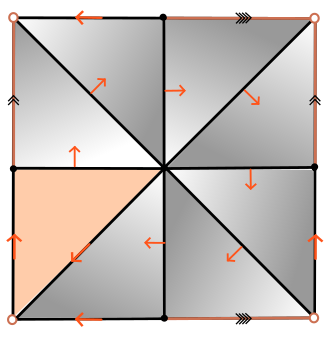